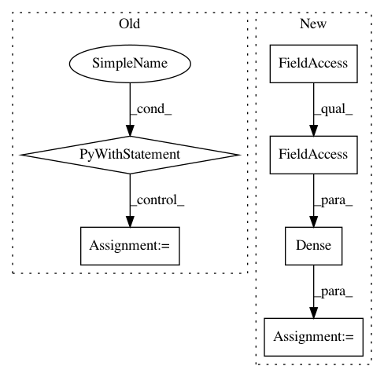

b43325e297498269be86b281a02e2ef79664f273,train_variational_autoencoder_tensorflow.py,,generative_network,#Any#Any#,66
Before Change
Returns:
bernoulli_logits: logits for the Bernoulli likelihood of the data
with slim.arg_scope([slim.fully_connected], activation_fn=tf.nn.relu):
net = slim.fully_connected(z, hidden_size)
net = slim.fully_connected(net, hidden_size)
bernoulli_logits = slim.fully_connected(net, 784, activation_fn=None)
bernoulli_logits = tf.reshape(bernoulli_logits, [-1, 28, 28, 1])
return bernoulli_logits
def train():
After Change
Returns:
bernoulli_logits: logits for the Bernoulli likelihood of the data
generative_net = tfk.Sequential([
tfkl.Dense(hidden_size, activation=tf.nn.relu),
tfkl.Dense(hidden_size, activation=tf.nn.relu),
tfkl.Dense(28 * 28, activation=None)
])
bernoulli_logits = generative_net(z)
return tf.reshape(bernoulli_logits, [-1, 28, 28, 1])
In pattern: SUPERPATTERN
Frequency: 3
Non-data size: 6
Instances
Project Name: altosaar/variational-autoencoder
Commit Name: b43325e297498269be86b281a02e2ef79664f273
Time: 2019-09-18
Author: altosaar@users.noreply.github.com
File Name: train_variational_autoencoder_tensorflow.py
Class Name:
Method Name: generative_network
Project Name: dmlc/gluon-nlp
Commit Name: 70a188776f7470c838dd22b1636462b75573a734
Time: 2020-07-16
Author: lausen@amazon.com
File Name: src/gluonnlp/models/albert.py
Class Name: AlbertForPretrain
Method Name: __init__
Project Name: altosaar/variational-autoencoder
Commit Name: b43325e297498269be86b281a02e2ef79664f273
Time: 2019-09-18
Author: altosaar@users.noreply.github.com
File Name: train_variational_autoencoder_tensorflow.py
Class Name:
Method Name: inference_network